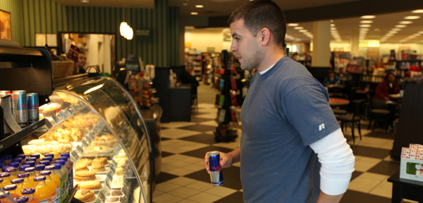
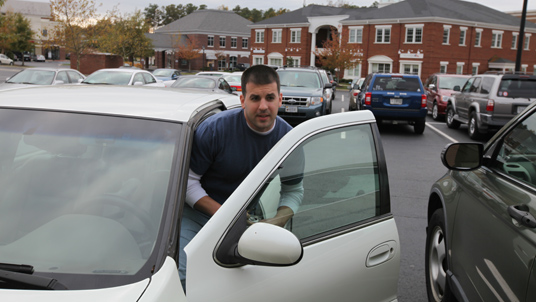

Chris Stefanucci mène une vie paisible avec sa femme et sa fille à Williamsburg, une petite ville du sud-est de la Virginie. Mais ce jeune homme de 29 ans a autrefois connu une existence autrement plus agitée : il a passé plusieurs années au sein de l'armée américaine en Irak et en Afghanistan.
Il est désormais ingénieur dans le civil, tout en gardant une sensibilité particulière pour les questions militaires. "Obama a bien fait de décider le retrait d'Afghanistan", juge-t-il. "On aurait pu rester là bas encore des années sans arriver à pacifier un pays que ni Alexandre le Grand ni les Russes ne sont parvenus à envahir".

Il votera toutefois pour Mitt Romney à la présidentielle car il est convaincu que les républicains soutiennent davantage l'armée que les démocrates. "Le problème avec Obama, c'est qu'il veut réduire la taille de notre armée, explique-t-il. On a beau avoir toute l'avance technologique du monde, pour faire la guerre, il faut toujours un mec sur le terrain avec un fusil."

Le retour à la vie civile a pourtant été difficile pour lui : il a souffert de dépression pendant un an. "Et encore, j'ai de la chance car j'étais pilote d'hélicoptère et donc souvent dans les airs. Ceux qui étaient sur le terrain ne s'en remettent jamais vraiment."